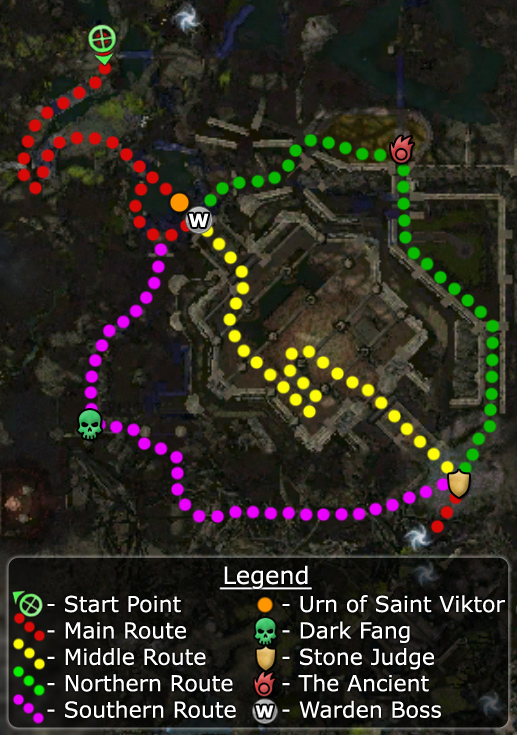

Elite: Vampiric Spirit
M6
Arborstone
◉ Mission Map

Click to enlarge · Local cache · Wiki
Summary (click to expand)
Retrieve the urn of Saint Viktor and safely leave Cathedral zu Heltzer .
Region: Echovald Forest · Mission: 6 of 13 · Type: Cooperative
✓ Objectives
Retrieve the sacred Urn of Saint Viktor and deliver it to Mhenlo.
- Escort Danika to the door of the cathedral so she can open it.
- Clear the cathedral of the guardians binding the Urn of Saint Viktor. You have [5...0] group[s] of guardians remaining.
- Collect the Urn of Saint Viktor
- ADDED: Make your way out of the cathedral! Defeat the guardian Stone Souls.
- ADDED: Protect Danika so that she can open the door.
- Mhenlo must survive.
→ Walkthrough
Head southwest across the bridge, turn left and follow the path down to the Cathedral doors. Avoid standing beneath giant mushrooms which emit the Stone Spores effect. You will find mixed groups of Wardens throughout this area. When Danika gets in range of the doors, she will open them. (Note that if there are minion masters in the party, she may become distracted by their minions and attempt to heal them instead.)
After a short dialog, Danika will open the gate, allowing the party into the cathedral. In order to pick up the Urn of Saint Viktor, the five groups of Wardens must first be defeated. Take advantage of the terrain - the water provides Blessed Water which lengthens enchantments, and the walls can be used as cover from the rangers. The group at the top of the stairs will also include two Wardens of Earth and a boss (either Ryver Mossplanter or Milefaun Mindflayer).
Picking up the urn will trigger a cinematic, and Mhenlo will become trapped outside the building, leaving the party and Danika to escape through the collapsing cathedral. From here on fragments of the building fall at a regular rate, causing minor damage to the whole party and interrupting skills and attacks. Several areas are in a near-constant state of collapse, players should make sure that neither Danika nor heroes are left unattended in these areas (i.e. avoid dropping the urn in the middle of these areas).
When the cinematic ends, Stone Rains and Stone Reapers will spawn in front of the group. After clearing these foes out, Danika will make a short speech and when she is finished she will then follow the bearer of the urn. There are now three possible routes to the cathedral exit, all with some hidden groups of Oni and the Cathedral Collapse effect:
- The southern route (purple path on the wiki map) is mainly populated by balanced teams of Dredge, which can be quite difficult to defeat. Except for Dredge Gardeners, all the Dredge have an interrupt skill and each melee Dredge also has a knock down skill, which can be problematic with Cathedral Collapse also interrupting your party. The narrow corridors leave little room for maneuver.
- The middle route (yellow path on the wiki map) is primarily populated by Wardens. This is the most straightforward route.
- The northern route (green path on the wiki map) is populated by Stone Scale Kirin, Dragon Mosses, and large groups of Undergrowths.
- Middle route
Head up the stairs past the defeated Warden boss. At the end of the stairs, a pair of hidden Stone Reapers will come to life. A few wardens will patrol along the platform too. If you linger here, another group of Warden will come at you from the right. Head left along the platform and clear out the groups upto the staircase. (The left side of the cathedral hall is less dangerous than the right, due to the placement of the collapsing ceiling triggers.)
The stairway itself is under a near permanent Cathedral Collapse effect, so either lure Wardens off the staircase, or run down to the lower area (either way, don't drop the urn on the staircase). At the bottom of the stairs are two hidden Stone Rains. Make your way slowly through the Wardens towards the southeast staircase.
There are two hidden groups of Oni on the staircase out of the main hall. When combined with the Cathedral Collapse effect, the Oni can become difficult to fight. The first group appears as you fight the last Wardens in the room, and the second appear right at the top of the stairs. For the second group there is a small patch on the topmost part of the stairs which is not collapsing. You should be standing on it when the Oni reveal themselves. Wait there for them to engage you, do not charge up at them, as this would mean you would have to fight in a collapsing area.
- Southern route
Foes on this route are primarily melee based. This path is also generally narrow in several spots, making skills that benefit from balled foes more effective, but that also means it is more difficult for your team to spread out.
Take the southern stairway. There will be a mob of Dredge at the top of the hill. All the Dredge groups on this route have a similar composition, mostly Gutters and Guardians with either one Gardner or one Gatherer. After the first mob, head through the doorway and there will be a similar mob of Dredge, and behind them will be two Blood Drinkers and Dark Fang (boss). In the doorway out of Dark Fang's room you will encounter three Oni popups.
In the following corridors there will be two more Dredge mobs followed by a pair of Blood Drinkers. The next Oni popups will be in the middle of a long set of stairs following the Blood Drinkers. Two more Dredge mobs follow and then the final Oni popups occur in a doorway just before one final mob of Dredge.
It is worth noting that this pathway drops you out right next to the exit that Danika must open for you to complete the mission. If you flag your team and drop the ashes near that door, you can potentially avoid Danika suddenly rushing over there when The Judge is defeated, because she'll already be near the door.
- Northern route
Take the stairway to your left. As you head up the stairs be prepared to meet your first group of 3 Oni. Defeat them and proceed to the top of the stairs, note that although you are outside the cathedral, you will still run into several areas with Cathedral Collapse. When you reach the courtyard, avoid the group to the left and eliminate the group on the right. Defeat The Ancient (spread out to avoid Shatterstone nuking your group) and go through the doorway.
Head south and then follow the right-hand wall. Again you can avoid the group to your east and just take care of the group directly ahead. At the end of the chamber, turn right again and head south up the stairs back into the cathedral.
As you go up the stairs, 3 Oni will appear. Defeat them and move up to the top of the stairs but be prepared for another set of 3 Oni to appear. Continue south down the hallway into the cathedral. 3 Oni will appear in the middle of the hallway and then another 2 when you reach the end of the hallway. After defeating this final pair of Oni, continue forward to the sealed door guarded by Stone Judge.
- Sealed door
All paths converge here. Upon reaching the wide open area with the closed door, several Stone Rain, two Stone Reapers and one Stone Soul will emerge from the stone pillars and gather around the Stone Judge boss. Try to intercept and take down one or two of the Stone Rains spawning next to you before they can join the group. Kill the Stone Judge last unless the Rains are overwhelming the party, since killing him causes Danika to rush towards the door to attempt to open it - whereby she aggros two Stone Crushers who awaken beside the doorway, and all surviving Elementals will also rush towards the door. Kill these to prevent them from interrupting Danika. The mission ends when Danika successfully opens the door, though this might be delayed a bit if she gets hit by falling boulders while opening it.
★ Bonus
See walkthrough and objectives for bonus details (if any).
◆ Hard Mode
The largest difference is that the Warden Mesmers and Elementalists become considerably more dangerous. This is especially noticeable with the first boss, as Ryver Mossplanter (Ranger) is fairly easily neutralized while Milefaun Mindflayer (Mesmer) can either severely damage or wipe out an entire party with Energy Surge, requiring the latter to be focused and disabled alongside the two accompanying Elementalists while the former can be ignored for last in most cases.
☠ Bosses & Elites
✦ Tips & Notes
Skill recommendations
- Standard melee counter techniques are helpful to dispose of the Oni and other physical attackers (including the Stone Judge).
- You can prevent or avoid interruptions due to Cathedral Collapse in several ways: bring short-activation time skills, skills that reduce activation time, or interrupt-prevention skills (e.g. Mantra of Resolve or Glyph of Concentration); mesmers can increase their Fast Casting rank.
- Use caution with overcast-causing skills, since that effect is triggered immediately; if you are interrupted, you will be overcast and waste the energy cost of the skill.
- Minion master builds are tricky to use during this mission: Danika can be delayed by healing them, the final battle lacks any fleshy enemies, and most skills that create minions have long activation times that can be interrupted by Cathedral Collapse.
- Consider bringing skills that benefit from holding a bundle on the character that carries the Urn.
Notes
- Once you have picked up the Urn, you can safely drop it and wander off without failing the mission. If you finish the mission without holding the Urn, your character will talk about recovering the Urn in the post-mission cinematic, but you will be empty-handed.
- If any of your characters have completed this mission as well as Eternal Grove and Unwaking Waters, your Kurzick Faction cap limit is increased by 7,000 points (this increase can only be applied once per account).
- Completion of this mission will fill in page #4 of the Shiro's Return storybook.
- After completing this mission, your party will be taken to Altrumm Ruins.
- Sometimes Danika will get stuck on one of the randomly spawned chests. Either have the urn bearer attempt to drag her out of it or place someone who has lost some health just out of range of her (and in a direction she can move) to try and bait her to approach them to use a healing skill on them to get her out of there. You will have to restart if she is permanently stuck.
- If you leave the central area without waiting for Danika to follow, she will run through the center route on her own. There is a high probability of her dying if you took an alternate route, as she will run through the spawns attempting to get to the end of the mission.
- Sometimes Danika will get stuck against the wall on the northern route. You will often have to restart as she will return to this position even when dragged past by the urn bearer.
- The Drinker group that includes Dark Fang sometimes spawns outside of the boundaries of the mission, sometimes still within the Danger Zone and sometimes outside of it.